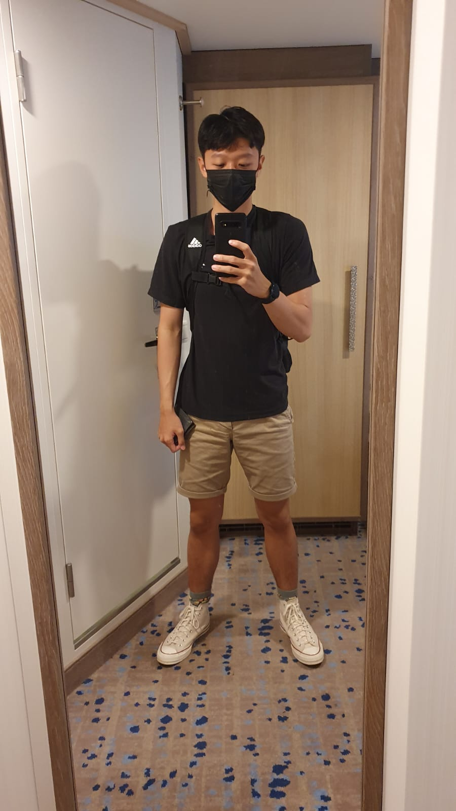

Learning how to use fusion 360
The first leson we had on Computer Aided Design, was learning how to use fusion 360.We were first taught the basics of fusion 360 on how to create a sketch and constrain. After that we were task to create a nametag.
After learning the basics we progress to more advance designs like, lego,Hex nut and chest piece.
Gimp
The next lesson we had on Computer Aided Design was Gimp. we learn how to replace the back ground image of our selfie. First we had to select the parts ourself that we want in the new background ,by using the free select tool. Next we chose the new background that we want and import it as a new layer.Lastly we then combine the 2 image together.
Inkscape
The last lesson we had on Computer Aided Design was Inkscape. we learn how to create an image in to vector. First open a picture that you want to convert in to vector.Next select path>Trace Bitmap.Lastly, play around with the function till you get your desire vector image. The function i selected was multiple scan>colour>scan(8)>select remove background and stack>Apply.